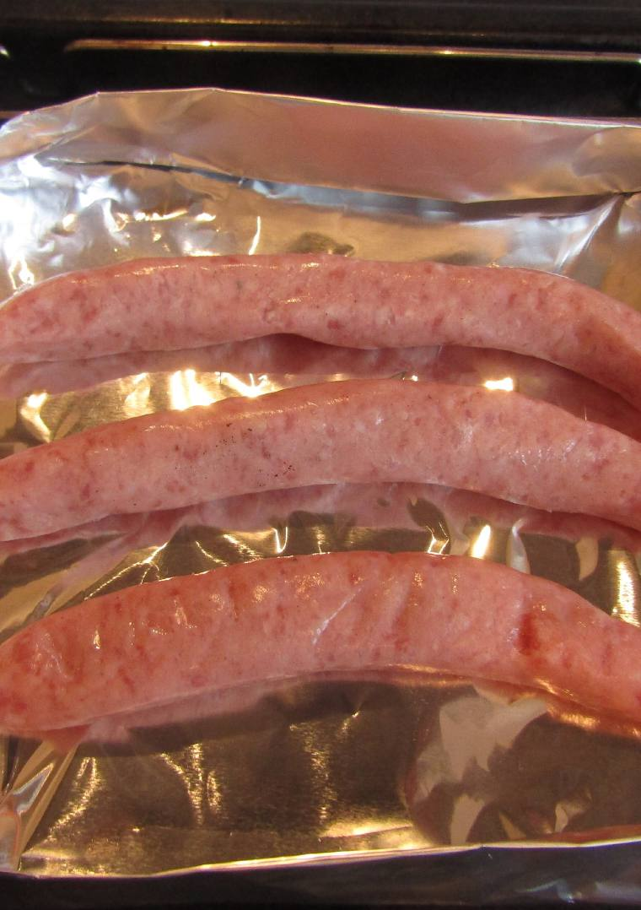

Charcuterie maison

Charcuterie maison
Chipolatas
Préparation : 1 h
Ingrédients (pour 1 kg de mêlée environ)
- 720 g d’épaule de porc
- 130 g de poitrine de porc
- 129 g de jambon frais
- 17 g de sel fin
- 2 g de poivre
- 2 g d’épices au choix
- menu de mouton 22/24 ou 24/26
Quantités adaptées. Les temps de cuisson ne sont pas recalculés.
- Parer les viandes, les couper en morceaux et les refroidir entre 2 et 3 °C.
- Hacher le maigre à la grille de 4 à 5 mm et le gras à la grille de 5 à 6 mm.
- Ajouter sel et épices, mélanger en versant un peu d’eau glacée, sans dépasser 10 % du poids.
- Embosser sans air, portionner en saucisses de 8 à 10 cm et égoutter 15 minutes avant de mettre au froid.
- À la dégustation, cuire jusqu’à 71 °C à cœur au moins.
À conserver au froid, jamais au placard
Au réfrigérateur entre 0 et 4 °C : 2 jours au plus. Au congélateur à −18 °C, dès le refroidissement : 3 mois au plus.
Les règles des bocaux
D’après le guide technique du CEPROC, Le savoir-faire artisan charcutier. Recette de saucisse à cuire ramenée de 10 kg à 1 kg. Conservation réduite pour la maison.